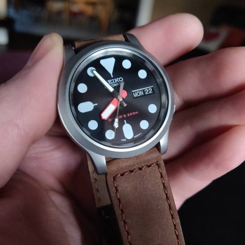

Work with us to create a custom timepiece, or choose from our collection of ready made watches.

Section 1
“Far out in the uncharted backwaters of the unfashionable end of the western spiral arm of the Galaxy lies a small unregarded yellow sun. Orbiting this at a distance of roughly ninety-two million miles is an utterly insignificant little blue green planet whose ape-descended life forms are so amazingly primitive that they still think digital watches are a pretty neat idea.” - Douglas Adams, The Hitchhiker’s Guide to the Galaxy